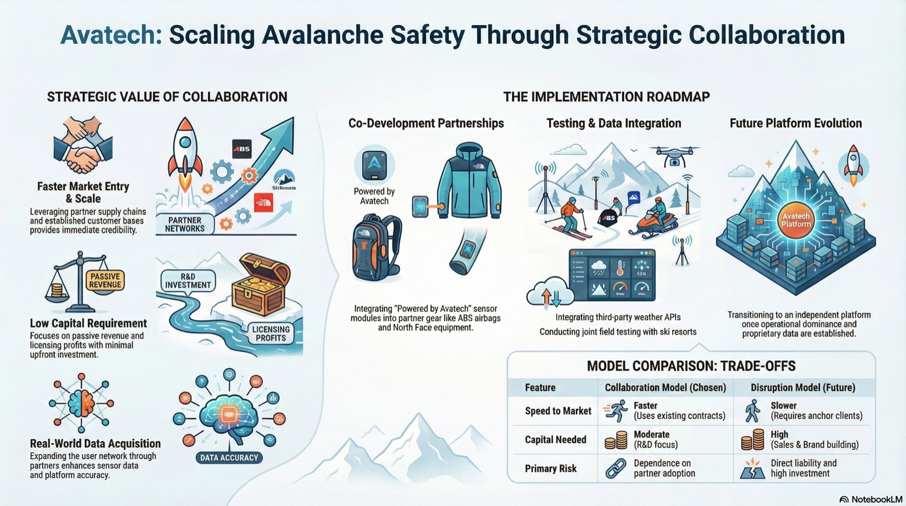
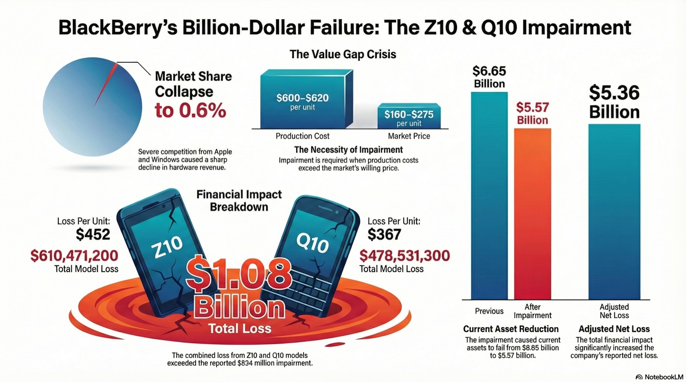
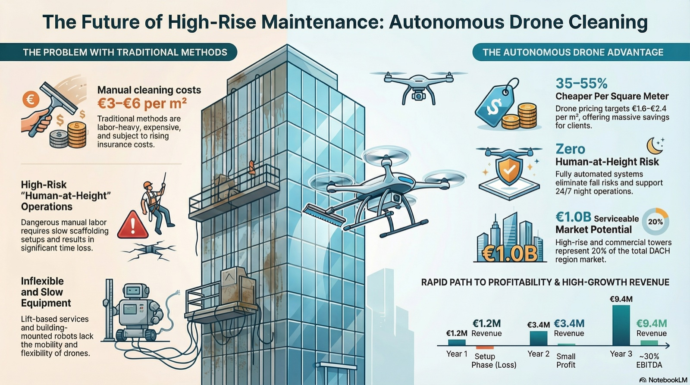
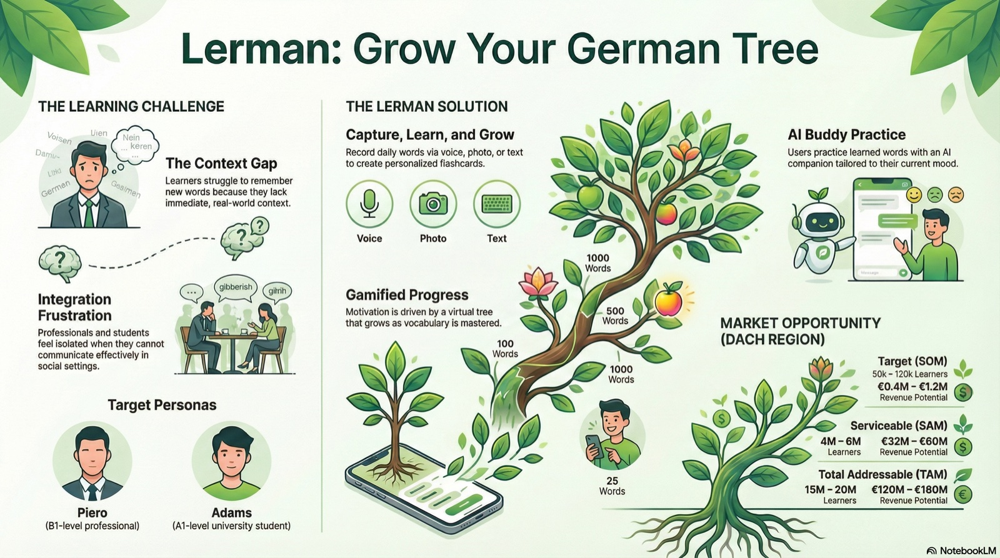
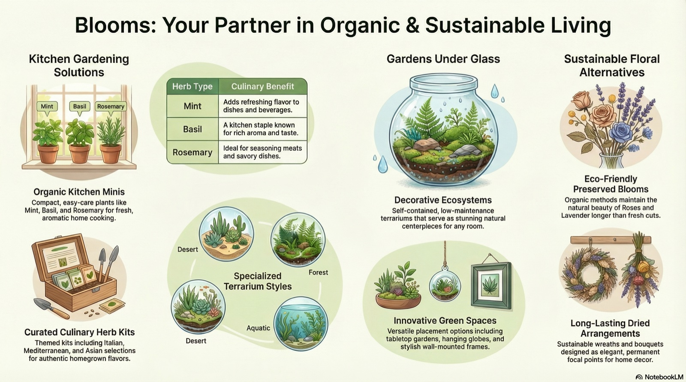

Avatech offers an innovative snowpack sensor for avalanche safety but lacks the resources required for operational scaling. To overcome this, the team recommends a collaborative strategy focused on co-development and testing partnerships with established outdoor brands and professional guides. This approach allows for fast market entry, enhanced credibility, and supply chain leverage before eventually building an independent data platform.

This presentation analyzes the severe necessity of a financial impairment adjustment for BlackBerry due to the failing Z10 and Q10 models. It highlights a massive value gap where high production costs far exceeded what the market was willing to pay, resulting in an estimated $1.08 billion loss. Consequently, this dire financial impact forced immediate reductions in asset value on the company's books, deeply affecting both the balance sheet and net income.

This executive overview pitches an autonomous drone-based window cleaning system designed to replace dangerous, expensive, and labor-heavy manual work at height. The B2B solution offers significant value to property management companies through zero safety risks, 35 to 55% lower costs, and greener operations. Despite some regulatory and insurance risks, the business model projects a break-even point within roughly two years followed by strong long-term profitability.

Lerman is a gamified language-learning app designed to help non-native speakers in the DACH region intuitively practice and remember German vocabulary in real-world contexts. The platform encourages daily engagement by allowing users to capture words, practice with an AI conversational buddy, and visualize their progress as a growing virtual tree. Extensive user research confirms that this contextual, communication-driven approach effectively addresses the frustrations of traditional language learning.

Blooms offers organic floral creations and gardening solutions that emphasize both environmental sustainability and natural beauty. Their product line includes compact kitchen herb kits, low-maintenance glass terrariums, and elegant preserved flower arrangements. These diverse, eco-friendly offerings are designed to serve as long-lasting home decor, culinary enhancements, and seasonal centerpieces.
This analysis explores how Rent the Runway achieved rapid market traction through data-driven experimentation, beta testing, and strategic collaborations with designers. It evaluates the pros and cons of financing a new funding round to stay ahead of competitors versus focusing on unit economics. Ultimately, the team recommends scaling selectively with existing funds while hiring key technical talent and improving infrastructure to meet high demand.